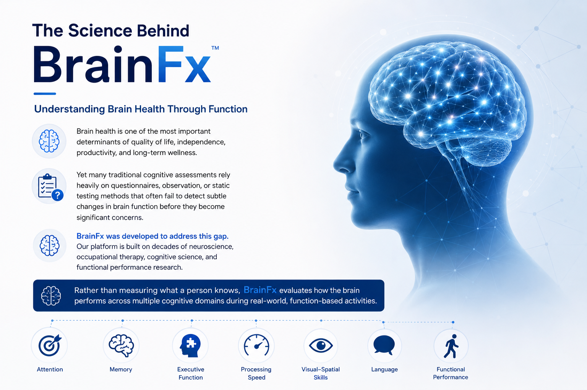
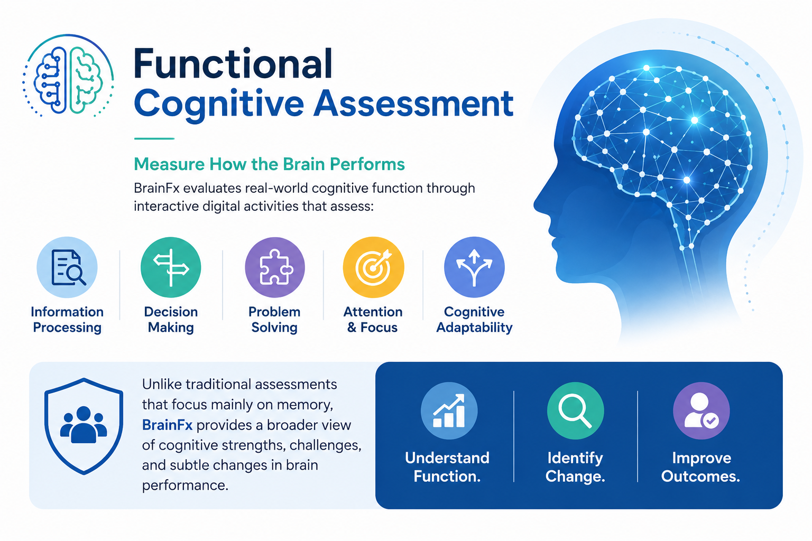

BrainFx AI Inc is improving clinical care and accelerating
neuroscience. neuroscience
Learn how.
The Science Behind BrainFx
The Science Behind BrainFx
Understanding Brain Health Through Function
Brain health is one of the most important determinants of quality of life, independence, productivity, and long-term wellness. Yet many traditional cognitive assessments rely heavily on questionnaires, observation, or static testing methods that often fail to detect subtle changes in brain function before they become significant concerns.
BrainFx was developed to address this gap. Our platform is built on decades of neuroscience, occupational therapy, cognitive science, and functional performance research. Rather than measuring what a person knows, BrainFx evaluates how the brain performs across multiple cognitive domains during real-world, function-based activities.
Multi-domain
Real-world tasks
Early signal
Subtle change detection
Actionable view
Supports care teams
Neurofunction View

Assessment Lens
Function in Context
Measures cognition in real-world tasks.
Core Signal
Subtle Change Detection
Identifies early shifts in performance.
Clinical Value
Better Decision Support
Supports clearer planning and follow-up.
Functional Assessment
A Functional Approach to Cognitive Assessment
The human brain is not designed to operate in isolation. Every day, we rely on multiple cognitive systems working together to complete tasks, solve problems, communicate, make decisions, and adapt to changing environments.
BrainFx assesses these interconnected cognitive functions through a series of digital activities designed to measure how individuals process information and perform tasks.
This approach provides a more comprehensive understanding of cognitive performance than many traditional screening tools, which often focus on memory alone.
By evaluating brain function through performance-based tasks, BrainFx helps identify strengths, weaknesses, and subtle changes that may otherwise go unnoticed.
Interconnected by Design
Reflects how multiple cognitive systems work together
in daily life.
Digital Performance Tasks
Uses interactive activities to observe how
information is processed in action.
Broader Cognitive Insight
Helps reveal strengths, limitations, and subtle
changes beyond memory-only screening.

Digital activity-based assessment
A clearer view of how multiple cognitive systems work
together in practice.
BrainFx View
Assessment Focus
Performance Over Recall
BrainFx looks at how the brain functions in activity, not only what a person can remember.
Clinical Relevance
More Complete Cognitive View
Offers a richer understanding of performance across multiple domains and everyday demands.
Functional, performance-based assessment can provide a more practical and meaningful picture of brain health in real-world settings.